raspberrypi
Report generated: Fri Oct 17 06:00:04 2025 UTCStart Time: Fri Oct 10 06:00:01 2025 UTC
End Time: Fri Oct 17 06:00:01 2025 UTC
Report Period: 7.0 days
Warning: plots clipped
Local Clock Time/Frequency Offsets
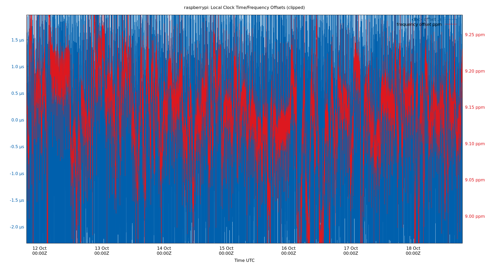| Percentiles...... | Ranges...... | Skew- | Kurt- | |||||||||||||
| Name | Min | 1% | 5% | 50% | 95% | 99% | Max | 90% | 98% | StdDev | Mean | Units | ness | osis | ||
| Local Clock Time Offset | -17.298 | -2.307 | -0.482 | 0.004 | 0.539 | 1.963 | 9.271 | 1.021 | 4.270 | 0.610 | -0.000 | µs | -6.313 | 79.6 | ||
| Local Clock Frequency Offset | 8.735 | 8.962 | 9.036 | 9.167 | 9.250 | 9.286 | 9.371 | 0.214 | 0.324 | 0.065 | 9.162 | ppm | 2.764e+06 | 3.879e+08 | ||
The time and frequency offsets between the ntpd calculated time and the local system clock. Showing frequency offset (red, in parts per million, scale on right) and the time offset (blue, in μs, scale on left). Quick changes in time offset will lead to larger frequency offsets.
These are fields 3 (time) and 4 (frequency) from the loopstats log file.
Local RMS Time Jitter
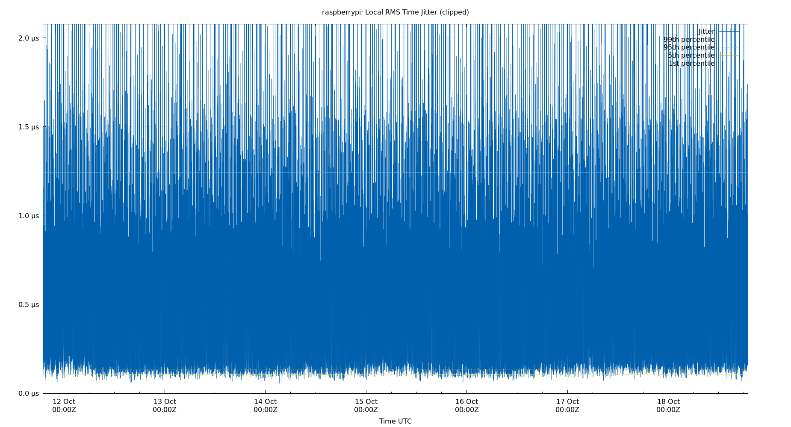| Percentiles...... | Ranges...... | Skew- | Kurt- | |||||||||||||
| Name | Min | 1% | 5% | 50% | 95% | 99% | Max | 90% | 98% | StdDev | Mean | Units | ness | osis | ||
| Local RMS Time Jitter | 0.056 | 0.108 | 0.138 | 0.284 | 1.240 | 2.052 | 8.265 | 1.102 | 1.944 | 0.416 | 0.429 | µs | 3.963 | 29.32 | ||
The RMS Jitter of the local clock offset. In other words, how fast the local clock offset is changing.
Lower is better. An ideal system would be a horizontal line at 0μs.
RMS jitter is field 5 in the loopstats log file.
Local RMS Frequency Jitter
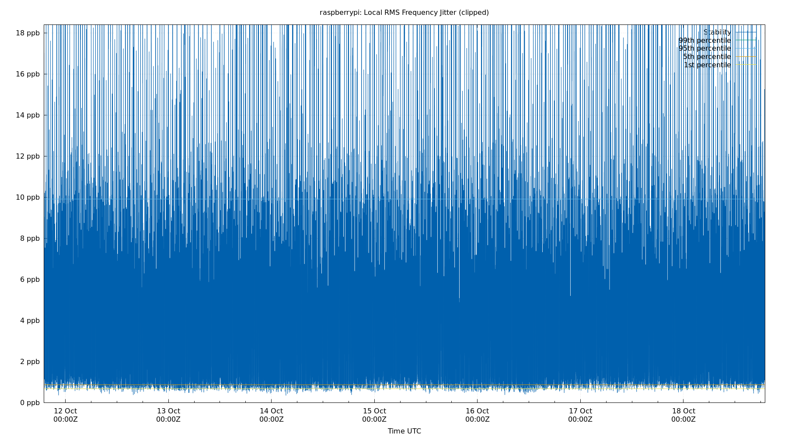| Percentiles...... | Ranges...... | Skew- | Kurt- | |||||||||||||
| Name | Min | 1% | 5% | 50% | 95% | 99% | Max | 90% | 98% | StdDev | Mean | Units | ness | osis | ||
| Local RMS Frequency Jitter | 0.345 | 0.685 | 0.865 | 1.863 | 9.847 | 18.346 | 52.954 | 8.982 | 17.661 | 3.551 | 3.184 | ppb | 3.257 | 20.45 | ||
The RMS Frequency Jitter (aka wander) of the local clock's frequency. In other words, how fast the local clock changes frequency.
Lower is better. An ideal clock would be a horizontal line at 0ppm.
RMS Frequency Jitter is field 6 in the loopstats log file.
Local Clock Time Offset Histogram
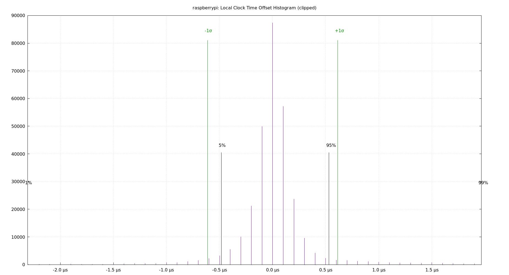| Percentiles...... | Ranges...... | Skew- | Kurt- | |||||||||||||
| Name | Min | 1% | 5% | 50% | 95% | 99% | Max | 90% | 98% | StdDev | Mean | Units | ness | osis | ||
| Local Clock Offset | -17.298 | -2.307 | -0.482 | 0.004 | 0.539 | 1.963 | 9.271 | 1.021 | 4.270 | 0.610 | -0.000 | µs | -6.313 | 79.6 | ||
The clock offsets of the local clock as a histogram.
The Local Clock Offset is field 3 from the loopstats log file.
Local Temperatures
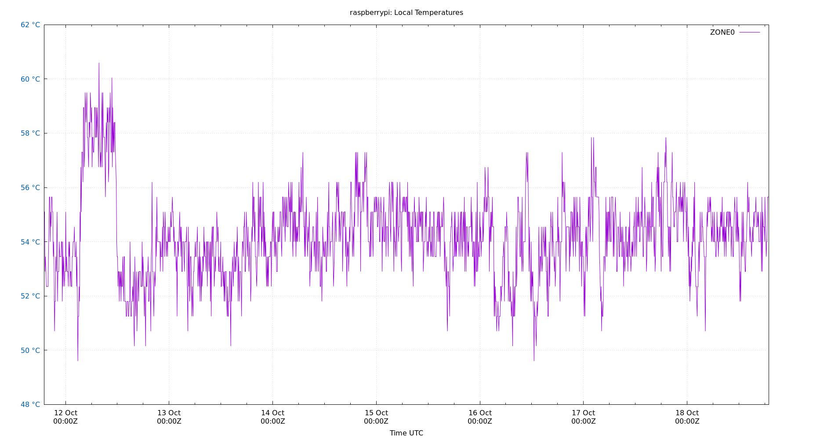Local temperatures. These will be site-specific depending upon what temperature sensors you collect data from. Temperature changes affect the local clock crystal frequency and stability. The math of how temperature changes frequency is complex, and also depends on crystal aging. So there is no easy way to correct for it in software. This is the single most important component of frequency drift.
The Local Temperatures are from field 3 from the tempstats log file.
Local Frequency/Temp
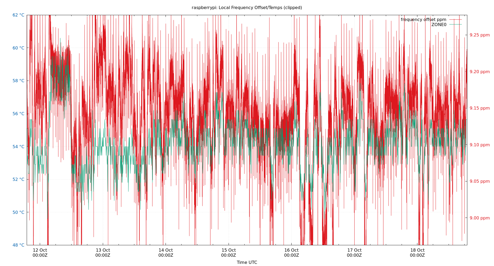| Percentiles...... | Ranges...... | Skew- | Kurt- | |||||||||||||
| Name | Min | 1% | 5% | 50% | 95% | 99% | Max | 90% | 98% | StdDev | Mean | Units | ness | osis | ||
| Local Clock Frequency Offset | 8.735 | 8.962 | 9.036 | 9.167 | 9.250 | 9.286 | 9.371 | 0.214 | 0.324 | 0.065 | 9.162 | ppm | 2.764e+06 | 3.879e+08 | ||
| Temp ZONE0 | 49.050 | 50.700 | 51.250 | 54.000 | 56.750 | 58.950 | 60.600 | 5.500 | 8.250 | 1.589 | 53.993 | °C | ||||
The frequency offsets and temperatures. Showing frequency offset (red, in parts per million, scale on right) and the temperatures.
These are field 4 (frequency) from the loopstats log file, and field 3 from the tempstats log file.
Local GPS
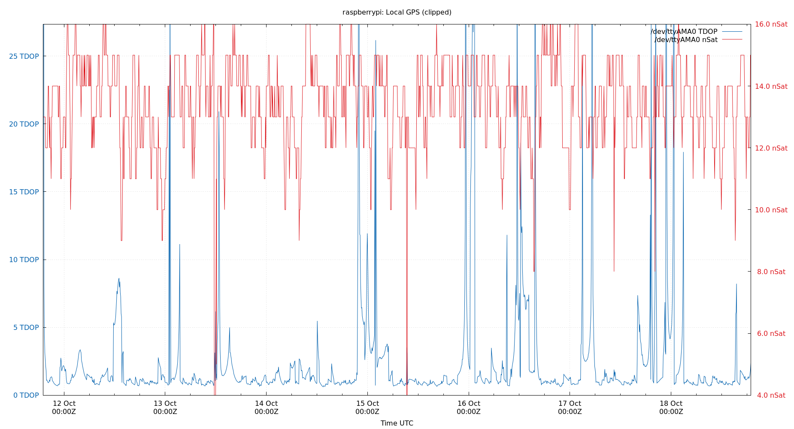| Percentiles...... | Ranges...... | Skew- | Kurt- | |||||||||||||
| Name | Min | 1% | 5% | 50% | 95% | 99% | Max | 90% | 98% | StdDev | Mean | Units | ness | osis | ||
| nSats | 4.000 | 9.000 | 11.000 | 14.000 | 15.000 | 16.000 | 16.000 | 4.000 | 7.000 | 1.469 | 13.456 | nSat | 566.5 | 4797 | ||
| TDOP | 0.620 | 0.670 | 0.740 | 1.080 | 7.460 | 26.760 | 157.250 | 6.720 | 26.090 | 6.509 | 2.450 | 10.96 | 214.6 | |||
Local GPS. The Time Dilution of Precision (TDOP) is plotted in blue. The number of visible satellites (nSat) is plotted in red.
TDOP is field 3, and nSats is field 4, from the gpsd log file. The gpsd log file is created by the ntploggps program.
TDOP is a dimensionless error factor. Smaller numbers are better. TDOP ranges from 1 (ideal), 2 to 5 (good), to greater than 20 (poor). Some GNSS receivers report TDOP less than one which is theoretically impossible.
Server Offsets
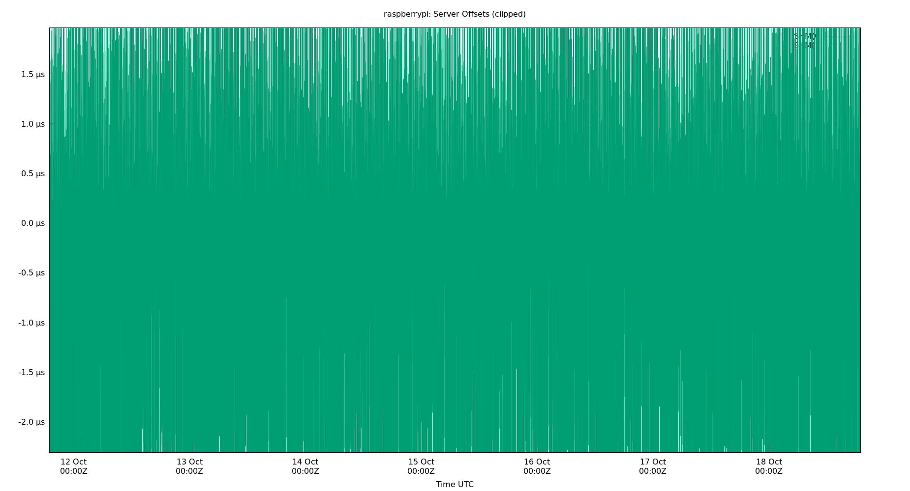The offset of all refclocks and servers. This can be useful to see if offset changes are happening in a single clock or all clocks together.
Clock Offset is field 5 in the peerstats log file.
Server Offset SHM(0)
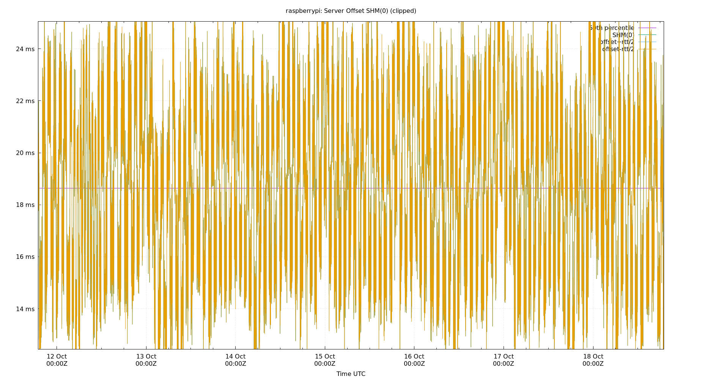| Percentiles...... | Ranges...... | Skew- | Kurt- | |||||||||||||
| Name | Min | 1% | 5% | 50% | 95% | 99% | Max | 90% | 98% | StdDev | Mean | Units | ness | osis | ||
| Server Offset SHM(0) | 9.795 | 12.200 | 13.392 | 18.569 | 23.653 | 25.135 | 28.126 | 10.261 | 12.934 | 3.286 | 18.353 | ms | 110.2 | 571 | ||
The offset of a server in seconds. This is useful to see how the measured offset is behaving.
The chart also plots offset±rtt, where rtt is the round trip time to the server. NTP can not really know the offset of a remote chimer, NTP computes it by subtracting rtt/2 from the offset. Plotting the offset±rtt reverses this calculation to more easily see the effects of rtt changes.
Closer to 0s is better. An ideal system would be a horizontal line at 0s. Typical 90% ranges may be: local LAN server 80µs; 90% ranges for WAN server may be 4ms and much larger.
Clock Offset is field 5 in the peerstats log file. The Round Trip Time (rtt) is field 6 in the peerstats log file.
Server Offset SHM(1)
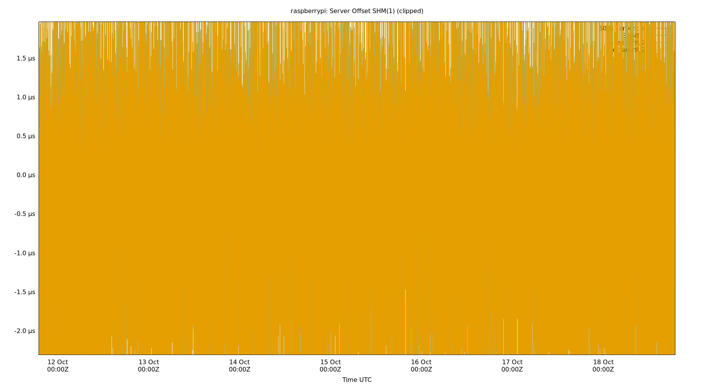| Percentiles...... | Ranges...... | Skew- | Kurt- | |||||||||||||
| Name | Min | 1% | 5% | 50% | 95% | 99% | Max | 90% | 98% | StdDev | Mean | Units | ness | osis | ||
| Server Offset SHM(1) | -17.299 | -2.308 | -0.483 | 0.005 | 0.540 | 1.964 | 9.272 | 1.023 | 4.272 | 0.611 | -0.000 | µs | -6.309 | 79.45 | ||
The offset of a server in seconds. This is useful to see how the measured offset is behaving.
The chart also plots offset±rtt, where rtt is the round trip time to the server. NTP can not really know the offset of a remote chimer, NTP computes it by subtracting rtt/2 from the offset. Plotting the offset±rtt reverses this calculation to more easily see the effects of rtt changes.
Closer to 0s is better. An ideal system would be a horizontal line at 0s. Typical 90% ranges may be: local LAN server 80µs; 90% ranges for WAN server may be 4ms and much larger.
Clock Offset is field 5 in the peerstats log file. The Round Trip Time (rtt) is field 6 in the peerstats log file.
Server Jitters
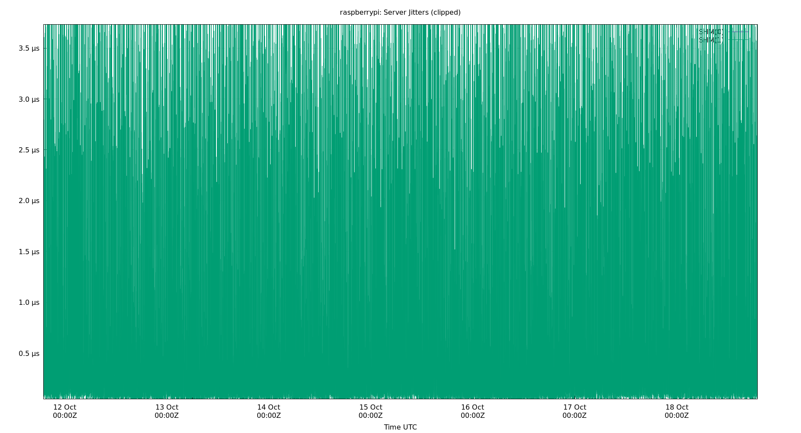The RMS Jitter of all refclocks and servers. Jitter is the current estimated dispersion, in other words the variation in offset between samples.
Closer to 0s is better. An ideal system would be a horizontal line at 0s.
RMS Jitter is field 8 in the peerstats log file.
Server Jitter SHM(0)
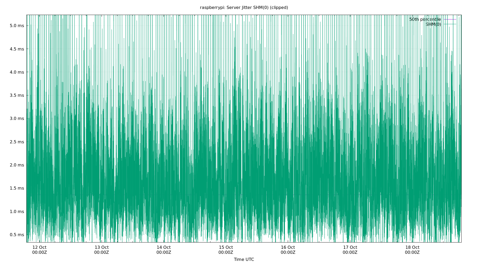| Percentiles...... | Ranges...... | Skew- | Kurt- | |||||||||||||
| Name | Min | 1% | 5% | 50% | 95% | 99% | Max | 90% | 98% | StdDev | Mean | Units | ness | osis | ||
| Server Jitter SHM(0) | 0.133 | 0.337 | 0.508 | 1.339 | 3.265 | 5.158 | 9.571 | 2.757 | 4.820 | 0.924 | 1.540 | ms | 4.319 | 17.73 | ||
The RMS Jitter of a server. Jitter is the current estimated dispersion, in other words the variation in offset between samples.
Closer to 0s is better. An ideal system would be a horizontal line at 0s.
RMS Jitter is field 8 in the peerstats log file.
Server Jitter SHM(1)
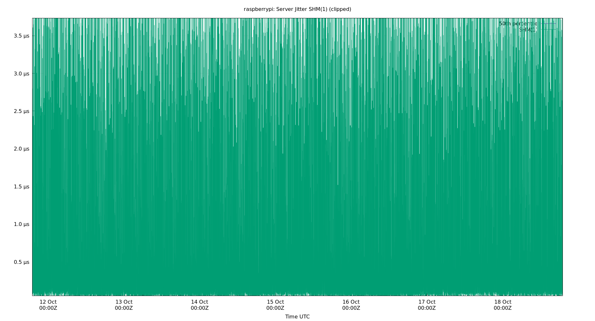| Percentiles...... | Ranges...... | Skew- | Kurt- | |||||||||||||
| Name | Min | 1% | 5% | 50% | 95% | 99% | Max | 90% | 98% | StdDev | Mean | Units | ness | osis | ||
| Server Jitter SHM(1) | 0.012 | 0.050 | 0.075 | 0.226 | 1.810 | 3.705 | 16.352 | 1.735 | 3.655 | 0.740 | 0.468 | µs | 3.772 | 35.12 | ||
The RMS Jitter of a server. Jitter is the current estimated dispersion, in other words the variation in offset between samples.
Closer to 0s is better. An ideal system would be a horizontal line at 0s.
RMS Jitter is field 8 in the peerstats log file.
Summary
| Percentiles...... | Ranges...... | Skew- | Kurt- | |||||||||||||
| Name | Min | 1% | 5% | 50% | 95% | 99% | Max | 90% | 98% | StdDev | Mean | Units | ness | osis | ||
| Local Clock Frequency Offset | 8.735 | 8.962 | 9.036 | 9.167 | 9.250 | 9.286 | 9.371 | 0.214 | 0.324 | 0.065 | 9.162 | ppm | 2.764e+06 | 3.879e+08 | ||
| Local Clock Time Offset | -17.298 | -2.307 | -0.482 | 0.004 | 0.539 | 1.963 | 9.271 | 1.021 | 4.270 | 0.610 | -0.000 | µs | -6.313 | 79.6 | ||
| Local RMS Frequency Jitter | 0.345 | 0.685 | 0.865 | 1.863 | 9.847 | 18.346 | 52.954 | 8.982 | 17.661 | 3.551 | 3.184 | ppb | 3.257 | 20.45 | ||
| Local RMS Time Jitter | 0.056 | 0.108 | 0.138 | 0.284 | 1.240 | 2.052 | 8.265 | 1.102 | 1.944 | 0.416 | 0.429 | µs | 3.963 | 29.32 | ||
| Server Jitter SHM(0) | 0.133 | 0.337 | 0.508 | 1.339 | 3.265 | 5.158 | 9.571 | 2.757 | 4.820 | 0.924 | 1.540 | ms | 4.319 | 17.73 | ||
| Server Jitter SHM(1) | 0.012 | 0.050 | 0.075 | 0.226 | 1.810 | 3.705 | 16.352 | 1.735 | 3.655 | 0.740 | 0.468 | µs | 3.772 | 35.12 | ||
| Server Offset SHM(0) | 9.795 | 12.200 | 13.392 | 18.569 | 23.653 | 25.135 | 28.126 | 10.261 | 12.934 | 3.286 | 18.353 | ms | 110.2 | 571 | ||
| Server Offset SHM(1) | -17.299 | -2.308 | -0.483 | 0.005 | 0.540 | 1.964 | 9.272 | 1.023 | 4.272 | 0.611 | -0.000 | µs | -6.309 | 79.45 | ||
| TDOP | 0.620 | 0.670 | 0.740 | 1.080 | 7.460 | 26.760 | 157.250 | 6.720 | 26.090 | 6.509 | 2.450 | 10.96 | 214.6 | |||
| Temp ZONE0 | 49.050 | 50.700 | 51.250 | 54.000 | 56.750 | 58.950 | 60.600 | 5.500 | 8.250 | 1.589 | 53.993 | °C | ||||
| nSats | 4.000 | 9.000 | 11.000 | 14.000 | 15.000 | 16.000 | 16.000 | 4.000 | 7.000 | 1.469 | 13.456 | nSat | 566.5 | 4797 | ||
Glossary:
- frequency offset:
- The difference between the ntpd calculated frequency and the local system clock frequency (usually in parts per million, ppm)
- jitter, dispersion:
- The short term change in a value. NTP measures Local Time Jitter, Refclock Jitter, and Server Jitter in seconds. Local Frequency Jitter is in ppm or ppb.
- kurtosis, Kurt:
- The kurtosis of a random variable X is the fourth standardized moment and is a dimension-less ratio. ntpviz uses the Pearson's moment coefficient of kurtosis. A normal distribution has a kurtosis of three. NIST describes a kurtosis over three as "heavy tailed" and one under three as "light tailed".
- ms, millisecond:
- One thousandth of a second = 0.001 seconds, 1e-3 seconds
- mu, mean:
- The arithmetic mean: the sum of all the values divided by the number of values. The formula for mu is: "mu = (∑xi) / N". Where xi denotes the data points and N is the number of data points.
- ns, nanosecond:
- One billionth of a second, also one thousandth of a microsecond, 0.000000001 seconds and 1e-9 seconds.
- percentile:
- The value below which a given percentage of values fall.
- ppb, parts per billion:
- Ratio between two values. These following are all the same: 1 ppb, one in one billion, 1/1,000,000,000, 0.000,000,001, 1e-9 and 0.000,000,1%
- ppm, parts per million:
- Ratio between two values. These following are all the same: 1 ppm, one in one million, 1/1,000,000, 0.000,001, and 0.000,1%
- ‰, parts per thousand:
- Ratio between two values. These following are all the same: 1 ‰. one in one thousand, 1/1,000, 0.001, and 0.1%
- refclock:
- Reference clock, a local GPS module or other local source of time.
- remote clock:
- Any clock reached over the network, LAN or WAN. Also called a peer or server.
- time offset:
- The difference between the ntpd calculated time and the local system clock's time. Also called phase offset.
- σ, sigma:
- Sigma denotes the standard deviation (SD) and is centered on the
arithmetic mean of the data set. The SD is simply the square root of
the variance of the data set. Two sigma is simply twice the standard
deviation. Three sigma is three times sigma. Smaller is better.
The formula for sigma is: "σ = √[ ∑(xi-mu)^2 / N ]". Where xi denotes the data points and N is the number of data points. - skewness, Skew:
- The skewness of a random variable X is the third standardized
moment and is a dimension-less ratio. ntpviz uses the Pearson's moment
coefficient of skewness. Wikipedia describes it best: "The qualitative
interpretation of the skew is complicated and unintuitive."
A normal distribution has a skewness of zero. - upstream clock:
- Any server or reference clock used as a source of time.
- µs, us, microsecond:
- One millionth of a second, also one thousandth of a millisecond, 0.000,001 seconds, and 1e-6 seconds.